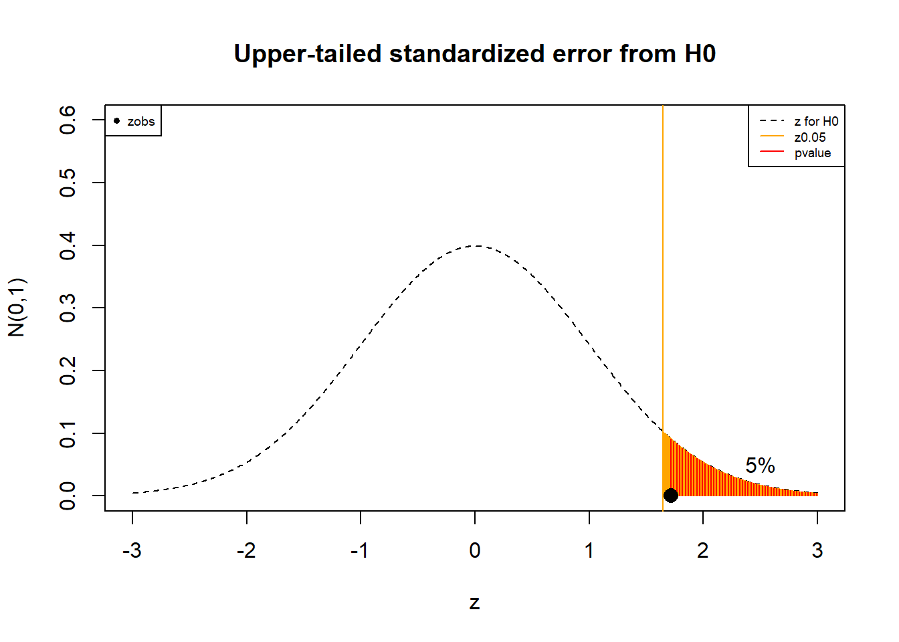
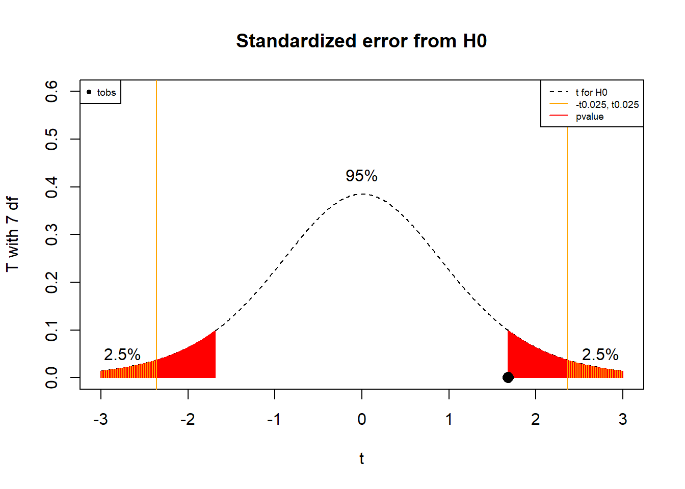
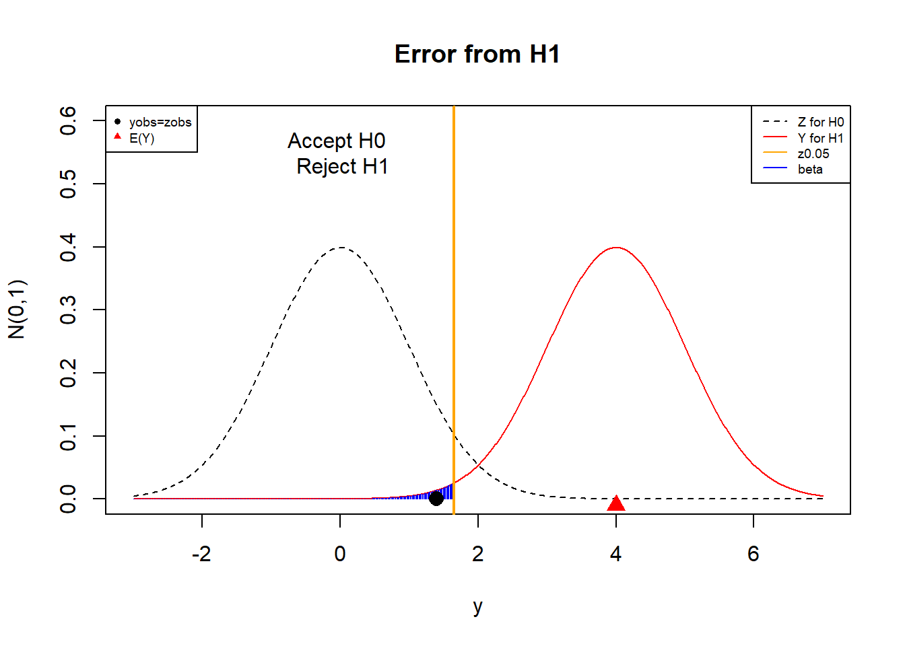

Chapter 14 Hypothesis testing
14.1 Objective
In this chapter we will study hypothesis testing of means and proportions. We will define the null and the alternative hypotheses and how to use data to choose between both.
We will also introduce hypothesis testing of variances. Finally we will describe the errors that are made when hypotheses are tested. These errors are known as false positives and false negatives.
14.2 Hypothesis
When we perform an experiment, we often want to test whether the changes we make to the experiment have a real effect. We want, for example, to know if we are able to influence the experiment. Or, if we submit the experiment under a new condition, we want to know if that condition affects the results of the experiment. We usually have an idea of what the data should look like when the new conditions are not present. Since the results of the experiment are random in any circumstance, how can we tell the difference in the experiment when changing conditions?
The strategy is to formulate a probability model for the experiment and estimate the change in the model parameters between conditions. We then use observations from taking random samples of the experiment under the different conditions to assess the change in the parameters and thus provide evidence about the expected change in the experiment.
Examples (Tyres)
The mean life of a standard tyre is \(20,000\) km. A tyre manufacturer wants to know if their improved tyres run longer than the standart type. Let’s try to translate their interest into statistical terms. Imagine a random experiment that consists of measuring how long the life of a particular tyre is. Therefore, the manufacturer is interested in knowing if the mean life of a new tyre is more than \(20,000\) km.
Let us formulate two dichotomous statements, that is, two mutually exclusive situations:
- The mean life of the new tyre may be less than \(20,000\) km
- The mean life of the new tyre may be greater than \(20,000\) km
This means that only one can be true. The question is then how we can use data to decide between situation a. or situation b.
Note than when running the experiment several times, some tyres will run for more than \(20,000\) km and some for less than \(20,000\) km. The question is whether the mean, as a parameter, is higher than \(20,000\) km, not single observations. The statements a. and b. are general statements.
Let’s consider that \(\mu\) is the mean of the random variable that measures the life of a new tyre. Therefore, the statements a. and b. can also be written as
- \(H_0: \mu \leq 20000\) km
- \(H_1: \mu > 20000\) km
Where the statement \(H_0\) states that the mean life of the new tyre is not the desired \(20,000\) km while statement \(H_1\) is the desired case. \(H_0\) and \(H_1\) are called hypotheses.
Definition
In statistics, a statement (conjecture) about the probability function of a random variable is called a hypothesis.
The hypothesis is usually written in two dichotomous statements
The null hypothesis: \(H_0\) when the conjecture is false usually refers to status quo. The data may be explained by the satus quo.
The alternative hypothesis: \(H_1\) when the conjecture is true usually refers to research hypothesis. The data may be explained by the desired alternative.
Example (Fertilizer)
What are the null and the alternative hypothesis for the following situation?
Fertilizer developers want to test whether their new product has a real effect on the growth of plants.
Being \(\mu_0\) the mean growth of the plants without fertilizer (known) and \(\mu\) the mean growth of the plants with the fertilizer (unknown)
- \(H_0:\mu \leq \mu_0\) (The fertilizer may do nothing: status quo)
- \(H_1:\mu > \mu_0\) (The fertilizer may have the desired effect: research interest)
Example (chemotherapy)
Pharmaceutical companies need to know if a novel chemotherapy can cure 90% of cancer patients.
Being \(p_0\) the proportion of patients that are cured without the chemotherapy (known) and \(p\) the proportion that are cures with the chemotherapy (unknown)
- \(H_0:p \leq p_0\) (The chemotherapy may do nothing: status quo)
- \(H_1: p > p_0\) (The chemotherapy may have the desired effect: research interest)
Note that our new improved experiment has the parameter \(p\) and we want to know how it compares to the experiment without any improvement that has the parameter \(p_0\).
We want to decide between \(H_0\) and \(H_1\). There are two options:
We reject the alternative hypothesis \(H_1\); that is, we accept the null hypothesis \(H_0\).
We accept the alternative hypothesis \(H_1\) (our interest); that is, we reject the null hypothesis \(H_0\).
Example (Microprocessors)
We want to produce computers with a certain type of microprocessor. The design requires that the mean width of a microprocessor is about \(26\)mm. We buy \(8\) microprocessors for prototypes from a manufacturing company that claims that they produce them with mean with of \(\mu_0=26\)mm. We are not sure and want to decide on whether the microprocessors of the company do measure on average \(26\)mm or not. We formulate the hypothesis contrast
- \(H_0:\mu = \mu_0\) (The manufacturer claim: status quo)
- \(H_1:\mu \neq \mu_0\) (Our doubt that the manufacturer is not right: research interest)
To decide between \(H_0\) or \(H_1\), we measure the width of the purchased sample of \(8\) microprocessors
## [1] 26.69284 26.65240 26.02918 26.21622 25.93998 27.10618 27.51114 25.25494The idea is simple. The average of the sample width is \(\bar{x}=26.42536\) which would make us believe that the microprocessors are too thick. But the manufacturer would argue that \(\bar{x}\) is the observation of a random variable and that \(\bar{x}>26\) is not a sufficient argument that he is not right (\(H_0\) is not true) because sometimes \(\bar{X}\) would be higher than \(26\) and sometimes it will me lower. Being more technical, he asks us to account for the variability of \(\bar{X}\) as an estimator of the \(\mu_0=26\). We would then ask ourselves: Is \(\bar{x}=26.42536\) what we would typically observe when we estimate \(\mu_0=26\) by \(\bar{x}\)? or are those \(0.42536\) too high to believe that the microprocessors are build with of expected value of \(26\)mm?
To test these ideas, we need a decision process that we describe now.
14.3 Hypothesis testing
Let us summarize the different cases, ways and types for testing hypothesis. We will then discuss each case with a particular example.
Hypotheses can be tested, or decided, using confidence intervals. Therefore, we are going to test hypothesis in the four cases that we saw for confidence intervals, namely:
Case 1: Hypothesis test for the mean \(\mu\), when \(X \rightarrow N(\mu, \sigma^2)\) and we know \(\sigma\)
Case 2: Hypothesis test for the mean \(\mu\), when \(X \rightarrow N(\mu, \sigma^2)\) and we do not know \(\sigma\)
Case 3: Hypothesis test for the proportion \(p\) when \(X \rightarrow Bernoulli(p)\) and both \(np\) and \(n(1-p)\) \(> 5\).
Case 4: Hypothesis test for the variance \(\sigma^2\), when \(X \rightarrow N(\mu, \sigma^2)\)
There are three ways to test the hypotheses:
- Using confidence intervals
- using a rejection zone
- using a \(p-value\).
All three options are equivalent. Finally, there are three types of hypothesis that we can test:
- Two tailed
- Upper tailed
- Lower tailed
14.4 Case 1 (known variance)
A tow tailed hypothesis contrast is of the form
- \(H_0:\mu = \mu_0\) (status quo)
- \(H_1:\mu \neq \mu_0\) (research interest)
This is called two tailed because the alternative hypothesis \(H_1\) requires that the mean \(\mu\) is either lower or higher than \(\mu_0\). This hypothesis can be tested in different cases. The case 1 is when
- \(X\) is a normal variable, and
- we know the value of \(\sigma^2\)
14.4.1 Hypothesis test with a confidence interval
For case 1 the confidence interval at \(95\%\) is
\[(l,u)=(\bar{x}-z_{0.025} \frac{\sigma}{\sqrt{n}}, \bar{x}+z_{0.025} \frac{\sigma}{\sqrt{n}})\]
Testing Criteria:
- If the confidence interval contains the null hypothesis
\[\mu_0\in (l,u)\] then we accept \(H_0\) with \(95\%\) confidence.
- If the confidence interval does not contain the null hypothesis\[\mu_0\notin (l,u)\] then we reject \(H_0\) with \(95\%\) confidence.
Example (Microprocessors)
We want to know whether the microprocessors on average \(26\)mm or not. Therefore, we test the following hypotheses
- \(H_0:\mu = 26\) (The microprocessors may have the width that the manufacturer claim: status quo)
- \(H_1:\mu \neq 26\) (The microprocessors may not have the width that the manufacturer claim: research interest)
Since we do no know which one is true, let’s start by estimating the mean of our sample (\(\mu\)). We then use \(\bar{x}=\hat{\mu}\). We do this as before, and consider case 1 where the model of the widths are normal
- \(X \rightarrow N(\mu=26, \sigma^2=0.7^2)\)
- and, somehow we know \(\sigma^2=0.7^2\) (perhaps given by the manufacturer)
The confidence interval for the mean of our sample \(\mu\) is
\[(l,u)=(\bar{x}-z_{0.025} \frac{\sigma}{\sqrt{n}}, \bar{x}+z_{0.025} \frac{\sigma}{\sqrt{n}})= (25.94, 26.91)\] The confidence interval tells us that we trust with \(95\%\) confidence that the true width \(\mu\) is in the interval. We don’t know the true value of \(\mu\) but we see that \(\mu=26\) mm could be it. Since the interval caught \(\mu_0\) (the manufacturer’s claim)
\[\mu_0\in (25.94, 26.91)\]
our conclusion is to accept that \(H_0\) could have produced our observed interval. We also say that that the data supports the manufacturer’s claim. More technically, we say that we do not reject \(H_0\).

14.4.2 Hypothesis test with acceptance/rejection zones
An equivalent way to test the hypothesis is to see if our set of observations are either common or rare if we assume that the null hypothesis is true. Let’s remember the hypothesis contrast
- \(H_0:\mu = \mu_0\) (status quo)
- \(H_1:\mu \neq \mu_0\) (research interest)
To test the hypothesis with a rejection zone we compute the standardized statistic
\[Z=\frac{\bar{X}-\mu_0}{\frac{\sigma}{\sqrt{n}}}\] when the null hypothesis is true. Note that we are standardizing with \(\mu_0\) (the null hypothesis). We then see if the observed value of \(Z\) is within the interval
\[(-z_{0.025}, z_{0.025})\] Remember that this interval defines the most common values of \(Z\) since \[P(-z_{0.025} \leq Z \leq z_{0.025})=0.95\]
The interval \((-z_{0.025}, z_{0.025})\) is called acceptance interval of \(H_0\) at \(95\%\) confidence level.

Testing criteria:
- If the observed statistics \(z_{obs}\) under the null hypothesis is in the acceptance region
\[z_{obs}=\frac{\bar{x}-\mu_0}{\frac{\sigma}{\sqrt{n}}} \in (-z_{0.025}, z_{0.025})\]
then we accept \(H_0\) with \(95\%\) confidence.
- If the observed statistics \(z_{obs}\) under the null hypothesis is not in the acceptance region
\[z_{obs} \notin (-z_{0.025}, z_{0.025})\] then we reject \(H_0\) with \(95\%\) confidence.
The region \((-z_{0.025}] \cup[z_{0.025})\) is called the rejection zone.
Example (Microprocessors)
We want to test whether the manufacturer of microprocessors produce them with mean \(\mu_0=26\). Let’s take the point of view of the manufacturer and ask whether the observation \(\bar{x}=26.42536\) is an expected average of a sample of \(8\) microprocessors when the expected value of the with of a microprocessor is \(\mu=26\). If \(H_0\) is true then \(\bar{X}\) is an estimator of \(\mu_0\) and therefore \(Z\)
\[Z=\frac{\bar{X}-26}{\frac{0.7}{\sqrt{8}}} \rightarrow N(0,1)\]
is the standardized error that we make when we estimate \(\mu_0\) with \(\bar{X}\), as the manufacturer claims. Because we are in case 1, \(Z\) is standard normal Since
\[\bar{X} \rightarrow N(26, \frac{0.7^2}{8})\]
For our data the standardized observed error is in the acceptance region
\[z_{obs}=\frac{26.42536-26}{\frac{0.7}{\sqrt{8}}}=1.7187 \in (-z_{0.025}, z_{0.025})\] Think of this regions as a region of tolerance for the error. Because our observation is within then everything is ok for the manufacturer. Had it not, we would have had have enough evidence to distrust the manufacturer’s claim. We conclude that our observed average is a typical observation of \(\bar{x}\) when the null hypothesis \(\mu_0\) is true. Therefore, we again accept that the data is consistent with the manufacturer’s claim. We also say that we do not reject \(H_0\).

14.4.3 Hypothesis test with a P-value
We can also contrast the two tail hypothesis by calculating the probability that the average of another sample from the null hypothesis will be even rarer than the average we just observed. Because we are in case 1, We know that the standardized statistics \(Z\) is standard normal variable then we define the \(pvalue\) as
\[pvalue = P(Z \leq -z_{obs}) + P(z_{obs} \geq Z) = 2 (1-\phi(|z_{obs}|))\]
That is the probability that when we take another sample of the status quo of the same size, we are able to obtain an even rarer observation. If our observation is rare for the status quo then this value will be small.
Testing criteria:
- If the observed \(pvalue\) is
\[pvalue \geq \alpha =1-0.95=0.05\]
then we accept the status quo \(H_0\) with \(95\%\) confidence.
- If the observed \(pvalue\) is
\[pvalue < \alpha =1-0.95=0.05\] then we reject \(H_0\) and accept our research question with \(95\%\) confidence.
\(\alpha\) is the significance level. It gives us how much of the distribution we are leaving out, and defines the region that we consider as rare observations.
Remember: We always trust our data. If the null hypothesis says that our data is a rare observation we then distrust the null hypothesis, and reject it.

Example (Microprocessors)
For our data the observed statistic \(z_{obs}=1.718714\) and its p-value is then
\[pvalue=2 (1-\phi(1.718714))=0.08567\]
Python: 2*(1- norm.cdf(1.718714))
We conclude that if we purchase other \(8\) microprocessors, it is likely, within \(8\%\) of the purchases, that we get a higher average width than the one we got; if the manufacturer produces mean widths at \(26\)mm. The null hypothesis can then tolerate the observed error with \(95\%\) confidence. We, therefore, accept that the status quo could have produced our data and conclude again that the data is consistent with the manufacturer’s claim.
In Python the entire hypothesis testing can be performed with the function ztest from the library bioinfokit (that needs to be previously installed)
# https://pypi.org/project/bioinfokit/
!pip install bioinfokit
from bioinfokit.analys import stat
import pandas as pd
data = {'x': [26.69284, 26.65240, 26.02918, 26.21622,
25.93998, 27.10618, 27.51114, 25.25494]}
df = pd.DataFrame(data)
res = stat()
res.ztest(df=df, x='x', mu=26, x_std=0.7, test_type=1)
print(res.summary)One Sample Z-test
------------------ ----------
Sample size 8
Mean 26.42536
Z value 1.71871
p value (one-tail) 0.0428332
p value (two-tail) 0.0856665
Lower 95.0% 25.94029
Upper 95.0% 26.91043
------------------ ----------14.4.4 Upper tail hypothesis
We may be interested in only testing for the fact that our experiment’s mean has a higher mean than the null’s mean.
Upper-tailed test:
- \(H_0:\mu \leq 26\) (at most microprocessors have this mean width)
- \(H_1:\mu > 26\) (microprocessors have higher mean width)
Perhaps, our design needs an upper limit to the with that the microprocessors can have, such that if it is not stisfy we may look for another provider.
This called upper-tailed because the alternative hypothesis \(H_1\) requires that the mean \(\mu\) is higher than \(\mu_0\). This hypothesis can be tested in different cases. The case 1 is when
- \(X\) is a normal variable, and
- we know the value of \(\sigma\)
Testing criteria:
- Confidence interval: If the upper-tailed confidence interval contains the null hypothesis
\[\mu_0\in (l,u)=(\bar{x}-z_{0.05} \frac{\sigma}{\sqrt{n}}, \infty)\]
where \(z_{0.05}=\phi^{-1}(0.95)=\)norm.ppf(0.95), then we accept \(H_0\) with \(95\%\) confidence. Note that this test is from the point of view of the data, we are not centering the confidence interval around \(\bar{x}\), instead we are leaving all the \(5\%\) of the rare cases to the left of the average. We are therefore asking if the null hypothesis is lower than the average.
- Rejection/acceptance region: If the observed statistics \(z_{obs}\) under the null hypothesis is in the acceptance region
\[z_{obs}=\frac{\bar{x}-\mu_0}{\frac{\sigma}{\sqrt{n}}} \in (-\infty, z_{0.05})\]
then we accept \(H_0\) with \(95\%\) confidence. Note that this test is from the point of view of the null hypothesis. We are leaving all the \(5\%\) of the rare averages to the right of the null hypothesis and therefore ask if the average is higher than the null hypothesis.
- \(pvalue\): If the observed upper-tailed \[pvalue= 1-\phi(z_{obs})\]
1-norm.cdf(zobs) is greater than \(\alpha=1-0.95=0.05\)
\[pvalue \geq \alpha =0.05\]
then we accept \(H_0\) with \(95\%\) confidence. Note that this test is again from the point of view of the null hypothesis. We are asking: if we were to take another average what is the probability that is higher than the observed one?
Example (Microprocessors)
In the example of the microprocessors, we may be interested to choose another manufacturer only in the case that the mean width is too high. Therefore the upper-tailed hypothesis is
- \(H_0:\mu \leq 26\) (at most microprocessors have this mean width: status quo)
- \(H_1:\mu > 26\) (microprocessors have higher mean width: research interest)
We will test the higher tail of the distribution. For the data that we discussed before, we then reject \(H_0\) (i.e. the manufacturer’s claim) at \(95\%\) confidence because of any of the three equivalent contrasts:
- The upper tailed confidence interval does not contain the null hypothesis \(\mu_0=13\)
\[\mu_0=26 \notin (\bar{x}-z_{0.05} \frac{\sigma}{\sqrt{n}}, \infty)=(26.01828, \infty)\]
where \(z_{0.05}=\)norm.ppf(0.95)=1.644854
- We have that the acceptance region for \(H_0\) is:
\[(-\infty, z_{0.05})=( -\infty, 1.644854)\]
and that the observed standardized error is not in the region \[z_{obs} = \frac{26.42536-26}{\frac{0.7}{\sqrt{8}}}=1.7187 \notin ( -\infty, 1.644854)\]
- The upper tail \(pvalue\) is lower than \(\alpha=0.05\) \[pvalue=1-\phi(1.7187)=0.04283451 <0.05\]
where \(pvalue=\)1-norm.cdf(1.7187).
The hypothesis test is performed in Python under the label p value (one-tail)
# https://pypi.org/project/bioinfokit/
!pip install bioinfokit
from bioinfokit.analys import stat
import pandas as pd
data = {'x': [26.69284, 26.65240, 26.02918, 26.21622,
25.93998, 27.10618, 27.51114, 25.25494]}
df = pd.DataFrame(data)
res = stat()
res.ztest(df=df, x='x', mu=26, x_std=0.7, test_type=1)
print(res.summary)One Sample Z-test
------------------ ----------
Sample size 8
Mean 26.42536
Z value 1.71871
p value (one-tail) 0.0428332
p value (two-tail) 0.0856665
Lower 95.0% 25.94029
Upper 95.0% 26.91043
------------------ ----------The result can be seen in the \(pvalue\) for one tail. Note that the \(pvalue\) for one tail is half of the \(pvalue\) for two tails.

We then conclude that the microprocessors of the manufacturer are too thick for our specifications and have evidence that support changing from provider.
14.5 Case 2 (unknown variance)
A two tailed hypothesis contrast of the form
- \(H_0:\mu = \mu_0\) (status quo)
- \(H_1:\mu \neq \mu_0\) (research interest)
can be tested when we do not know \(\sigma^2\) using case 2, namely when
- \(X\) is a normal variable, \(X \rightarrow N(\mu, \sigma^2)\), and
- we do not know the value of \(\sigma^2\)
Let’s remember that in this case, the standardized error with respect to the sample standard deviation \(S\)
\[T=\frac{\bar{X}-\mu}{\frac{S}{\sqrt{n}}}\]
Follows a \(t\)-distribution with \(n-1\) degrees of freedom. Therefore, we can apply all three criteria as in case 1 but making the substitution of \(s\) for \(\sigma\) and \(Z\) for \(T\).
Testing criteria:
- Confidence interval: If the confidence interval contains the null hypothesis
\[\mu_0\in (l,u)=(\bar{x}-t_{0.025,n-1} \frac{s}{\sqrt{n}}, \bar{x}+t_{0.025,n-1} \frac{s}{\sqrt{n}})\] then we accept \(H_0\) with \(95\%\) confidence.
- Rejection/acceptance region: If the observed statistics \(t_{obs}\) under the null hypothesis is in the acceptance region
\[t_{obs}=\frac{\bar{x}-\mu_0}{\frac{s}{\sqrt{n}}} \in (-t_{0.025}, t_{0.025})\]
where \(t_{0.025}=F_t^{-1}(0.975, n-1)=\) t.ppf(0.975, n-1), then we accept \(H_0\) with \(95\%\) confidence.
- \(pvalue\): If the observed \(pvalue= 2 (1-F_t(|t_{obs}|))=\)
2*(1- t.cdf(abs(tobs), n-1))is
\[pvalue \geq \alpha =1-0.95=0.05\]
then we accept \(H_0\) with \(95\%\) confidence.
Example (Microprocessors)
For the hypothesis contrast for the microprocessors width
- \(H_0:\mu = 26\)
- \(H_1:\mu \neq 26\)
We will only assume that the mean width of a microprocessor is normally distributed
- \(X \rightarrow N(\mu=26, \sigma^2=?)\)
- We do not know \(\sigma^2\)
Having obtained the sample
## [1] 26.69284 26.65240 26.02918 26.21622 25.93998 27.10618 27.51114 25.25494with this data, we accept that \(H_0\) (the manufacturer’s claim) at \(95\%\) significance because of any of following equivalent contrasts:
- The confidence interval
\[(\bar{x}-t_{0.025, n-1} \frac{s}{\sqrt{n}}, \bar{x}+t_{0.025, n-1} \frac{s}{\sqrt{n}})=(25.82818, 27.02254)\]
contains \(H_0:\mu=26\).
- The acceptance region for \(H_0\) is:
\[(-t_{0.025,7}, t_{0.025,7})=( -2.36, 2.36)\]
and the observed standardized error from \(H_0\) is \[t_{obs} = \frac{26.42536-26}{\frac{0.714313}{\sqrt{8}}}=1.6843\]
within the acceptance region.
- The \[pvalue=2(1-F_{t,7}(1.6843))=0.136\]
is greater then \(\alpha=0.05\). The \(pvalue\) is computed R like 2*(1- t.cdf(1.6843,7))
In Python this contrasts are performed with the function stats.ttest_1samp:
from scipy import stats
data = [26.69284, 26.65240, 26.02918, 26.21622,
25.93998, 27.10618, 27.51114, 25.25494]
res=stats.ttest_1samp(data, popmean=13)
print (res)TtestResult(statistic=1.68427527723504, pvalue=0.1360005269730744, df=7)
If we use an upper tailed hypothesis, we would obtain half of the \(pvalue\) for the two tail test, that it \(pvalue=0.068\) and, therefore, we still would not reject the manufacturer’s claim. The upper tail \(pvalue\) is greater than the significance limit \(\alpha=0.05\). With a t-test we do not look for another manufacturer in any case.
Note that in the case 1, we have assumed that \(\sigma=0.7\). In case 2, for the same data we computed \(s=0.714313\). Therefore the data suggest that the widths are more dispersed than what we have assumed, giving more benefit of the doubt to the manufacturer. This difference in dispersion lead to two different decisions for the upper-tail test, to replace the manufacturer (case 1) or not (case 2).
Example (NaCl)
\(11.6g\) of NaCl is dissolved in \(100 g\) of water and has a molar concentration of \(1.92 mol/L\)
We design a process to remove salt from this concentration and obtain the following results
## [1] 1.716 1.889 1.783 1.849 1.891We first want to test at \(0.95\%\) confidence if the process changes the salt concentration in any direction. Therefore we propose a two-tail hypothesis:
- \(H_0:\mu=1.92\)
- \(H_1:\mu \neq 1.92\)
We will assume that \(X\) is normal and that we do not know the variance \(\sigma^2\). Therefore, we are in case 2 that we test with a stats.ttest_1samp
from scipy import stats
data = [1.716, 1.889, 1.783, 1.849, 1.891]
res=stats.ttest_1samp(data, popmean=1.92, alternative='two-sided')
print (res)
res.confidence_interval(confidence_level=0.95)TtestResult(statistic=-2.8038174739802226, pvalue=0.048622042176166516, df=4)
ConfidenceInterval(low=1.7321215833901604, high=1.9190784166098398)Since \(pvalue <0.05\), we conclude that the molar concentration has significantly changed after the process.
14.5.1 Lower tail hypothesis
If we are interested only in the case that we are able to remove salt from the concentration then we rather propose a lower tail hypothesis:
- \(H_0:\mu \geq 1.92\) (After the desalinization process the concentration o salt is at least the initial one: status quo)
- \(H_1:\mu < 1.92\) (After the desalinization process the concentration is lower the initial one: research interest)
Note that the lower tail is given by the alternative \(H_1\). We want to test that the average concentration after the process is lower than the initial concentration. The contrast criteria are the same as for the other types of hypothesis. For this type of hypothesis, we will accept the null hypothesis if
\(\mu_0\) is in the confidence interval: \[\mu_0\in (l,u)=(-\infty, \bar{x}+t_{0.05,n-1} \frac{s}{\sqrt{n}})\]
or, \(t_{obs}\) is in the aceptance region:
\[t_{obs}\in (t_{0.05,n-1}, \infty)\]
- or, the \(pvalue\) on the lower tail of the distribution.
\[pvalue=F_t(t_{obs},n-1)\] is higher than \(\alpha=0.05\)
In any other case, we reject \(H_0\) and accept the alternative hypothesis.
Example (NaCl)
For the lower tail contrast
- \(H_0:\mu \geq 1.92\)
- \(H_1:\mu < 1.92\)
We can assume that the concentration is normal and that we do not know \(\sigma^2\). Therefore, we are in case 2 for which we only need to change the argument alternative to less in the function t.test.
from scipy import stats
data = [1.716, 1.889, 1.783, 1.849, 1.891]
res=stats.ttest_1samp(data, popmean=1.92, alternative='less')
print (res)
res.confidence_interval(confidence_level=0.95)TtestResult(statistic=-2.8038174739802226, pvalue=0.024311021088083258, df=4)
ConfidenceInterval(low=-inf, high=1.8973758334933486)We see that the \(pvalue\) is reduced in half, and therefore we have more confidence in rejecting the lower tail hypothesis than the two-sided hypothesis.
Example 2 (soporific)
In some cases, we are not sure about the numerical value of the hypothesis to test, but we know that we want to improve the value of a parameter in two different conditions.
In the original paper of Gosset, he analyzed the effect of two soporific medicines.
- 10 individuals were given soporific 1 and wrote down the additional hours slept under treatment, with a mean \(0.75\)
import numpy as np
medicine1 = np.array([0.7,-1.6,-0.2,-1.2,-0.1,3.4,3.7,0.8,0,2])- The same 10 individuals were given soporific 2 and wrote down the additional hours slept under treatment, with a mean \(2.33\)
medicine2 = np.array([1.9,0.8,1.1,0.1,-0.1,4.4,5.5,1.6,4.6,3.4])The scientific hypothesis was that soporific 2 was better than soporific 1. For each individual, Gosset computed the difference between the treatments. Taking \(X\) as the difference between treatments, this was the sample observed for \(X\)
## [1] 1.2 2.4 1.3 1.3 0.0 1.0 1.8 0.8 4.6 1.4The average hours gained by soporific 2 with respect to soporific 1 was \(1.58\), and \(s=1.229995\).
The scientific question can be stated as upper-tailed paired t-test:
- \(H_0:\mu \leq 0\) (no treatment difference: \(\mu_2-\mu_1=0\))
- \(H_1:\mu > 0\) (treatment 2 higher then treatment 1: \(\mu_2-\mu_1>0\))
Where \(\mu\) is the mean of the differences between treatments.
If we suppose that \(X\) is normal and we do not know \(\sigma^2\) then we are in case 2. The standardized error is:
\[T=\frac{\bar{X}}{\frac{S}{\sqrt{n}}}\]
and its observation
\[t_{obs}=\frac{\bar{x}}{\frac{s}{\sqrt{n}}}\] which is also known as the signal to noise ratio.
we can test the hypothesis for the difference \(X=medicine_1-medicine_2\)
from scipy import stats
res=stats.ttest_1samp(x, popmean=0, alternative='greater')
print (res)
res.confidence_interval(confidence_level=0.95)TtestResult(statistic=4.062127683382037, pvalue=0.001416445098692135, df=9)showing a significant gain by soporific 2 (rejection of the null).
Equivalently we can test the hypothesis using a paired t-test, where we introduce the observation for each separate condition, and state that the observations are paired
t_statistic, p_value = stats.ttest_rel(medicine2, medicine1, alternative='greater')TtestResult(statistic=4.062127683382037, pvalue=0.001416445098692135, df=9)In this plot, we show all the statistical elements for this example. In red, we show the null hypothesis of no difference between treatments. The \(95\%\) confidence interval for the difference is shown in the upper part. The CI does not contain the null. In the second row, we see the data represented in a box plot. The \(5\%\)-quantile of the data is on \(0\). At the bottom row, we see the raw data, that is the individual observations for the change in hours for each patient.

14.5.2 Hypothesis testing with large n and any distribution
On many occasions, \(X\) is not normally distributed but if we can take large samples \(n \ge 30\) then we can use the CLT:
Then the standardized error from the null hypothesis can be approximated to a standard distribution
\[Z=\frac{\bar{X}-\mu}{\frac{\sigma}{\sqrt{n}}} \rightarrow N(0,1)\]
and then we proceed as in case 1. If \(\sigma\) is unknown we then replace it with its estimate \(s\) and proceed as in case 2 using the t-statistic
\[T=\frac{\bar{X}-\mu_0}{\frac{S}{\sqrt{n}}}\]
14.6 Case 3 (proportions)
If our random experiment is a Bernoulli trial \(X \rightarrow Bernoulli(p)\), we can formulate hypothesis contrasts for the probability \(p\) of an event in the trial. Consider an upper tailed hypothesis
- \(H_0: p \leq p_0\) (status quo)
- \(H_1: p> p_0\) (research interest)
In this case 3, we test a hypothesis for the proportion if
- \(X\) is a Bernoulli trial, and
- \(np\), \(n(1-p)\) are both greater than 5, so we can apply the central limit theorem.
Remember that if we take a the sample of \(n\) Bernoulli trials \((1,0,1,...0)\), \[\bar{X}=\frac{1}{n}\sum_{i=1}^n X_i\] is the relative frequency for the ‘’ones’’ in the sample. This is an estimator of \(p\).
If we assume that the null hypothesis is true then \(X \rightarrow Bernoulli(p_0)\) and the standardized error that we make when we estimate \(p_0\) with \(\bar{X}\) is
\[Z=\frac{\bar{X}-p_0}{\frac{\sqrt{p_0(1-p_0)}}{\sqrt{n}}} \rightarrow N(0,1)\]
\(\sigma=\sqrt{p_0(1-p_0)}\) is the standard deviation of \(X\) when the null hypothesis is true: \(V(X)=\sigma^2=p_0(1-p_0)\). With this \(Z\) statistic, we can accept or reject the null hypothesis using any of the three testing criteria.
Example (process improvement)
We may be satisfied with a new process if \(90\%\) of the times we improve the previous process.
If we run a sample of \(200\) new processes and find that \(188\) times we improved the previous process, can we be satisfied with the new process at \(95\%\) confidence?
We then formulate an upper-tailed hypothesis contrast for the null hypothesis \(p_0=0.9\). Therefore, the null and alternative hypotheses are
- \(H_0: p \leq p_0=0.9\) (The new process is not satisfactory: status quo)
- \(H_1: p> p_0=0.9\) (The new process is satisfactory: research interest)
We assume that if the null hypothesis is true then
- The probability model of a random experiment is
\[X \rightarrow Bernoulli (p_0)\] 2. and check that when \(p_0n=180>5\) and \((1-p_0)=n=20>5\)
Therefore, we can apply case 3.
We can use any of the three criteria to test the hypothesis. For this example, we believe that have a satisfactory process because, we reject \(H_0\) at \(95\%\) following
- The upper tail confidence interval for the \(p\) does not include \(p_0\)
\(p_0=0.9 \notin (\bar{x}-z_{0.05}\big[\frac{p_0(1-p_0)}{n} \big]^{1/2},1)= (0.905,1)\)
- The observed standardized error from the null is not in the acceptance region
\[z_{obs}= \frac{\bar{X}-p_0}{\big[\frac{p_0(1-p_0)}{n} \big]^{1/2}} =\frac{0.94-0.90}{\sqrt{0.00045}}=1.88563 \notin (-\infty, z_{0.05})=(-\infty, 1.644)\]
- The upper tail \(pvalue\) is lower than \(\alpha=0.05\):
\[pvalue=1-\phi(1.885618)=0.02967323<0.05\]
in Python: 1-norm.cdf(1.885618)

The test can be performed in Python using the proportions_ztest function
from statsmodels.stats.proportion import proportions_ztest
proportions_ztest(count=0.9*200, nobs=200, value=188/200, alternative='smaller')(-1.8856180831641234, 0.029673219395960154)Note that the function is programmed such that the null hypothesis is in the count argument, which is used to compute the standard deviation of the sample. This is why the value of the statisitcs is negative and the test i lower tailed.
14.7 Case 4 (variances)
In many cases, experiments are run to test the dispersion of data.
Such as
when complying with strict design standards where measurements must be between certain values.
when different treatments are applied to different groups, we want to see the dispersion of outcomes between the groups.
A tow tailed hypothesis contrast for the variance is of the form
- \(H_0:\sigma = \sigma_0\) (status quo)
- \(H_1:\sigma \neq \sigma_0\) (research interest)
This hypothesis for \(\sigma\) (case 4) can be tested when
- \(X\) is a normal variable
Remember that if we take a random sample \[S^2=\frac{1}{n-1}\sum_{i=1}^n (X_i-\bar{X})^2\] is the sample variance. This is an estimator of \(\sigma^2\).
If we assume that the null hypothesis is true and \(X \rightarrow N(\mu, \sigma_0)\) then the error ratio that we make when we estimate \(\sigma^2\) with \(s^2\) is
\[W=\frac{(n-1)S^2}{\sigma_0^2}\]
Note that when \(W=1\), we make no error. \(W\) follows a \(\chi^2\) (chi-squared) distribution with \(n-1\) degrees of freedom.
\[W \rightarrow \chi^2(n-1)\]
With \(W\), we can accept or reject the null hypothesis using any of the three testing criteria.
Example (Semiconductor)
The production of a semiconductor chip is regulated by a process that requires that the thickness of a particular layer does not vary in more than \(\sigma_0=0.6mm\), from its mean of \(25mm\).
To keep control of the process every so often a sample of \(20\) specimens is taken.
On one occasion a sample of the thickness of 20 semiconductors was
## [1] 24.51239 24.79975 26.35608 25.06134 25.11248 26.49211 25.40100 23.89940
## [9] 24.40244 24.61227 26.06495 25.31304 25.34867 25.09629 24.51642 26.55461
## [17] 25.43313 23.28904 25.61018 24.58867The estimated standard deviation for this data is \(s=0.8462188\) was the process out of control at \(99\%\) confidence and should be stopped?
We therefore want to contrast the upper tail hypotheses
- \(H_0:\sigma^2 \leq \sigma_0^2=0.6^2\) (Process is under control)
- \(H_1:\sigma^2 > \sigma_0^2=0.6^2\) (Process is out of control)
Let’s test the hypothesis using the acceptance region.
The contrast statistics is \[W=\frac{(n-1)S^2}{\sigma_0^2} \rightarrow \chi^2(n-1)\]
and the threshold limit \(\alpha=0.01=0-0.99\). Therefore, the acceptance region \(P(W\leq \chi^2_{0.01,19})=0.99\) is
\[(0, \chi^2_{0.01,19})=(0,36.19)\]
In Python: \(\chi^2_{0.01,19}=\)chi2.ppf(0.99,19)\(= 36.19\)
For our data, the observed standardized error ratio is:
\[w_{obs}=\frac{19 (0.8462188)^2}{0.60^2}=37.79344\]
That falls outside the acceptance region
\[w_{obs}=37.79344\notin (0,36.19)\]
Therefore, we reject the null hypothesis and conclude that that yes! the process is out of control.
If we, alternativelly, calculate the upper tailed \(pvalue\)
\[pvalue=1-F_{\chi^2,19}(37.79344)= 0.006\] we see that it is lower than \(\alpha=0.01\) and reject the null hypothesis.
R: 1-chi2.cdf(37.79344, 19)

For testing the hypothesis, we can use the following code in Python
import numpy as np
from scipy import stats
# Sample data
x = np.array([24.51239, 24.79975, 26.35608, 25.06134, 25.11248,
26.49211, 25.40100, 23.89940, 24.40244, 24.61227,
26.06495, 25.31304, 25.34867, 25.09629, 24.51642,
26.55461, 25.43313, 23.28904, 25.61018, 24.58867])
# Hypothesized variance
hypothesized_variance = 0.6**2
# Degrees of freedom
df = len(x) - 1
# Calculate the test statistic
chi_square = (len(x) - 1) * np.var(x,ddof=1) / hypothesized_variance
# Calculate the critical value from the Chi-square distribution
alpha = 1 - 0.99
critical_value = stats.chi2.ppf(1 - alpha, df)
# Perform the variance test
p_value = 1 - stats.chi2.cdf(chi_square, df)
print("Variance Test:")
print("Chi-Square Statistic:", chi_square)
print("Critical Value:", critical_value)
print("P-Value:", p_value)Variance Test:
Chi-Square Statistic: 37.79345223227778
Critical Value: 36.19086912927004
P-Value: 0.00630421503698297414.8 Errors in hypothesis testing
The result of an upper tail hypothesis test may be to reject the null hypothesis:
\[H_0: \mu\leq\mu_0\]
when \(H_0\) is actually true. In the case of the microprocessors, imagine, for example that we rejected the manufacturer’s claim (\(H_0\)) when they actually do produce microprocessors of widths with mean \(26\)mm. Data made us believe that they produce thick microprocessors. But it was only because we bought a sample of \(8\) microprocessors that by chance were too thick.
We must bear in mind that the decision is made based on the data. It may well be that the observed statistic has fallen, by chance, far from the null hypothesis, in the rejection zone of \(H_0\) even when this hypothesis is true. The statistic is a random variable and one observation can have a large value by chance.
When we perform the hypothesis test, we don’t know if \(H_0\) is true. Let us assume that we found by other means that \(H_0\) is really true. The probability of rejecting the truth (\(H_0\)) is precisely the level of statistical significance \(\alpha\). We call this probability the probability of making a type 1 error. Taking the example for case 1, an upper tail test, and a confidence of \(95\%\) we have that
\[\alpha = P(Z> z_{0.05})=0.05\]
where \(z_{0.05}=\phi^{-1}(0.95)=\) norm.ppf(0.95)=1.644

A type 1 error is also called a false positive because our research interest is in \(H_1\). When we reject \(H_0\), we accept \(H_1\) and say that our test is positive. Accepting \(H_1\) translates to announcing a discovery, so the type 1 error is announcing a discovery that is not true: we falsely claimed a discovery because the data suggested it, we were fooled by it.
There is another type of error. The result of an upper tail hypothesis test can be accepting the null hypothesis:
\[H_0: \mu\leq\mu_0\]
when this is not true. Again for the microprocessors, imagine now that our data made us accept the manufacturer’s claim (\(H_0\)) when they actually do produce microprocessors that are too thick. Data made us believe that they produce acceptable microprocessors. But it was only because we bought a sample of \(8\) microprocessors that by chance were too thin.
In this case, it may be that the observed statistic has fallen, due to randomness, close to the null hypothesis, in the zone of acceptance of \(H_0\), when really \(H_1\) is true. If we found out somehow that, for example, \(\mu\) really does have a value of \(\mu_1\) then the alternative hypothesis would be exactly:
\[H_1: \mu=\mu_1\]

If \(H_1\) is indeed true (red line, which we don’t know when we perform the hypothesis test) then the statistic is really a random variable \(Y\) that has mean (case 1)
\[E(Y)=\frac{\mu_1-\mu_0}{\frac{\sigma}{\sqrt{n}}}\]
and most of them will fall close to this value, therefore, in the rejection area of \(H_0\), validating the hypothesis test. However, there are cases in which the observed statistic falls within the acceptance zone of \(H_0\) due to randomness, despite the fact that the statistics are produced by \(H_1\). In these cases we accept \(H_0\) when it is not true. This error is called a type 2 error or a false negative. Since our research interest is in \(H_1\) we failed to accept it. rejecting \(H_1\) translates to discarding a discovery, so the type 2 error is ignoring a discovery that is actually true.
For case 1, with an upper tailed test and a confidence level of \(95\%\), this is
\[\beta= P(Y < z_{0.05})\] Where \(Y \rightarrow N(\frac{\mu_1-\mu_0}{\sigma/\sqrt{n}},1)\) is the true distribution of the observed statistics.
Example (Light bulb)
The energy efficiency of a new light bulb is a normal random variable with a standard deviation of \(5\) watts. We consider that the light bulbs we produce are efficient if their average does not exceed \(80\) watts, so we propose the hypothesis test
- \(H_0 : \mu \geq 80\) (not efficient)
- \(H_1 : \mu < 80\) (efficient)
We want to prove that we produce efficient light bulbs and we plan to draw a random sample of size \(100\), with a statistical significance level of \(5\%\). If previous studies have suggested that light bulbs may average \(\mu=\mu_1=79\) watts, what type 2 error do we expect?
The contrast is for case 1 with a lower tail. Therefore the probability of accepting the null hypothesis (we do not produce efficient light bulbs) is
\[\alpha = P(Z< z_{0.95})=0.05\]
and \(z_{0.95}=\)norm.ppf(0.05)\(=-1.644\).
The type 2 error is therefore
\[\beta= P(Y > -1.644)\]
that is, the probability of accepting that we do not produce efficient light bulbs when in fact we do. Because we are in case 1, as we know \(\sigma\) and the variable is normal, the observed statistics are actually distributed as
\[Y \rightarrow N(\frac{79-80}{5/\sqrt{100}}=-2,1)\] and the type 2 error is
\[\beta = 1-F(-1.644)=0.36\]
computed in Python as 1-norm.cdf(-1.644,-2,1)=0.36. Therefore, only \(\alpha=5\%\) of the times we would announce that we produce efficient light bulbs when they really are not, while \(\beta=36\%\) of the times we would announce that we have a production that is not useful when it really does work.
When we carry out a hypothesis test we have two possibilities for each condition
- \(H_1\) is actually : true (\(\mu=\mu_1\)) or false (\(\mu=\mu_0\))
- The test for \(H_1\) is: positive (\(z_{obs}\) in the acceptance zone of \(H_1\)) or negative (\(z_{obs}\) in the acceptance zone of \(H_0\))
Example (PCR)
We do a PCR to test for an infection. The hypothesis test is
- \(H_0\) no infection
- \(H_1\) there is infection
We do the PCR test and it gives us
- negative: we reject the infection (\(H_1\))
- positive: we accept the infection (\(H_1\))
We can write the contingency table for the probabilities of the results of the hypothesis test as
| \(H_1\) is true | \(H_1\) is false | |
|---|---|---|
| The test on \(H_1\) is positive | \(1-\beta\) | \(\alpha\) |
| The test on \(H_1\) is negative | \(\beta\) | \(1-\alpha\) |
| sum | 1 | 1 |
we therefore have
- The type 2 error rate: probability of a false negative (ignore a finding when it is true)
\[\beta=P(negative|H_1)\]
The True positive rate: This is the power or sensitivity of a test (claiming a discovery when it is true, the main objective) \[1-\beta=P(positive|H_1)\]
The Type 1 error rate: probability of a false positive (state a discovery when it is false) \[\alpha=P(positive|H_0)\]
The True Negative rate: This is the specificity of a test (ignore a finding when it is false) \[1-\alpha=P(negative|H_0)\]
14.9 Exercises
14.9.0.1 Exercise 1
Imagine we take a random sample of size \(n = 41\) of a normal random variable \(X\), and find that the sample average is \(10\) and the sample variance is \(1.5\).
- What is then the confidence interval for the mean of \(X\) at \(95\%\) confidence level?
Consider that \(t_{0.025,40}=\) t.ppf(0.975, 40) \(\sim 2\).
Test the hypothesis that the mean of \(X\) is different than \(10.5\), using a \(5\%\) significance threshold.
Write the code to calculate the P-value to test the hypothesis that the mean of \(\mu\) is lower than \(10.5\), using a \(5\%\) significance threshold.
Consider that the code for the T probability distribution with \(n-1\) degrees of freedom is t.cdf(tobs, n-1).
14.9.0.2 Exercise 2
\(10\) gas condensates showed the following concentrations of mercury (in \(ng/ml\)):
\(23.3\), \(22.5\), \(21.9\), \(21.5\), \(19.9\), \(21.3\), \(21.7\), \(23.8\), \(22.6\), \(24.7\)
Assuming that the mercury concentration is distributed normally across gas condensates, test the hypothesis that condensate does not surpass the toxicity limit established at \(24 ng/ml\).
14.10 Practice
Load misophonia data https://alejandro-isglobal.github.io/SDA/data/data_0.txt
We have four measures of anxiety:
- Trait: ansiedad.rasgo (are you an anxious person?) continuous:0-100
- State: ansiedad.estado (are you currently feeling anxious?) continuous:0-100
- Diagnosed: ansiedad.medicada (have you been diagnosed with an anxiety disorder?) binary (si, no)
- Excess: ansiedad.dif (difference between State and Trait)
We are interested in the variable misofonia.dif, that is the observed excess of anxiety from the trait
\(excess = state - trait\)
Test the following hypotheses
Is excess in anxiety different from 0? is it higher?
Is excess in anxiety higher than 0 for men and women separately?
Is the proportion of anxious patients different from \(0.03\)?